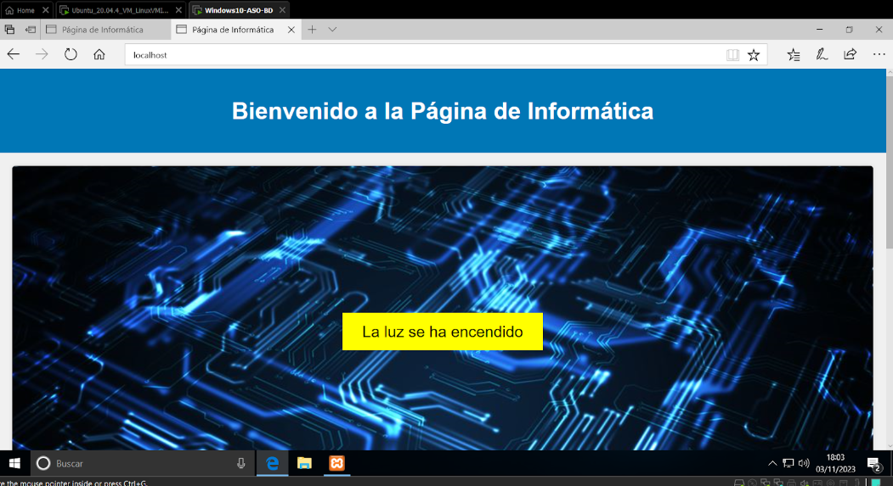

ÍNDICE
PROXY INVERSO Y APACHE
1. Primera práctica de Proxy inverso:
La práctica consistía en establecer un proxy inverso en Apache mediante XAMPP para dirigir las solicitudes del cliente al servidor backend, garantizando seguridad con HTTPS y la posibilidad de desconectar el servidor ante problemas. Además, realizamos la configuración de un balanceador de carga para distribuir el tráfico entre varios servidores, todo gestionado por directivas específicas de Apache como ProxyPass y BalancerMember.
2. Examen. Parte 1:
Unos días mas tarde hicimos un examen para ver que conocimiento teniamos sobre el proxy y si sin ayuda eramos capaces de montar uno en una maquina virtual Ubuntu.
La parte uno consistía en lo siguiente:
1. Instalamos Apache y verificar que funciona.
2. Configurabamos el virtual host para poner nuestro dominio y no por IP.
3. Entregar la documentación de todo realizado.
Aquí dejo constancia de mi práctica de nuevo para descargar: DESCARGAR PDF
3. Examen. Parte 2:
Ahora venía la parte un poco más compleja. Había que realizar un proxy para un Sonoff de la red local que se podia acceder a través de una IP especifica.
Nuestra tarea fue crear una solución para que los usuarios pudieran interacturar con ese dispositivo a traves de una pagina web alojaba en el servidor Apache de Linux.
Los usuarios accederán a esta página web a través de un servidor que actuará como proxy inverso.
Aquí dejo una captura de la página que ralicé en su día donde si le dabas encendia la luz:
